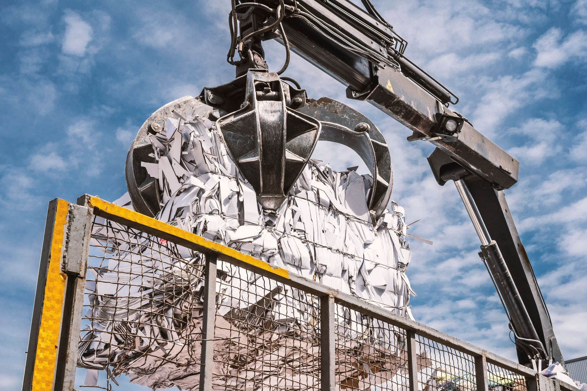
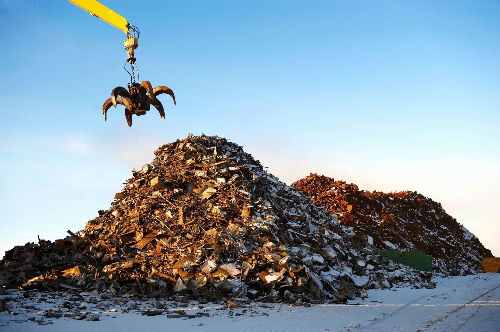
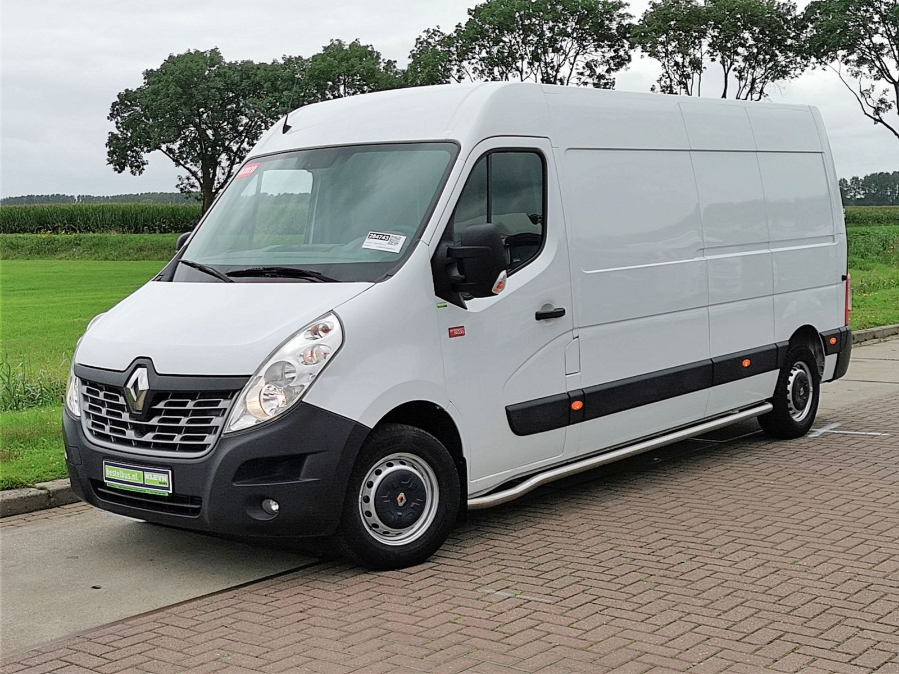
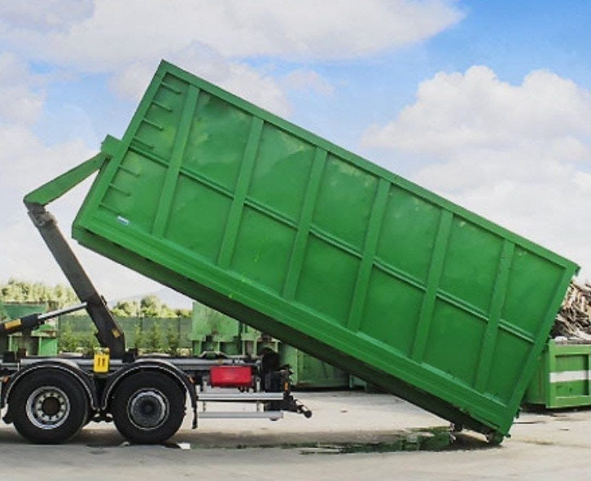
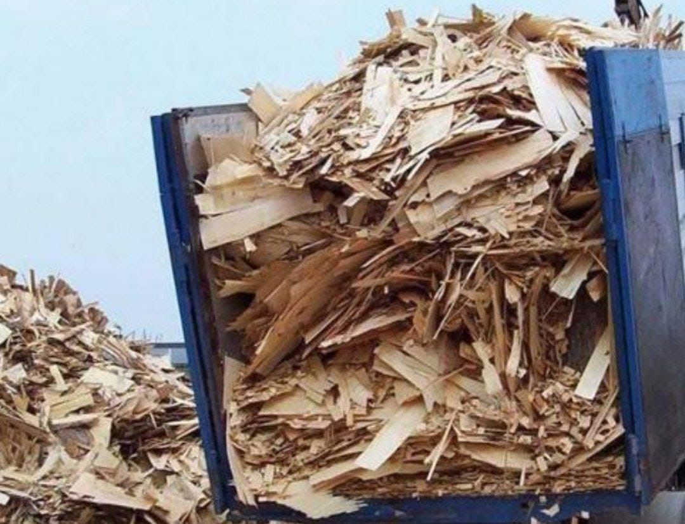
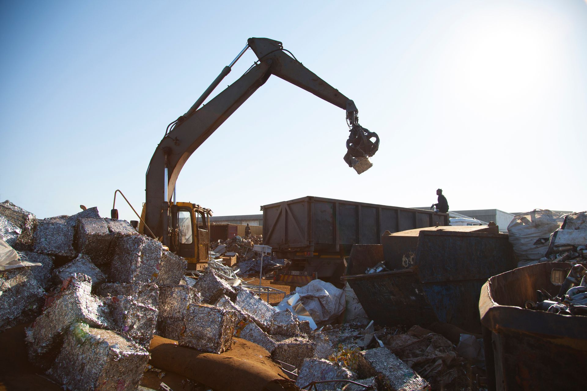
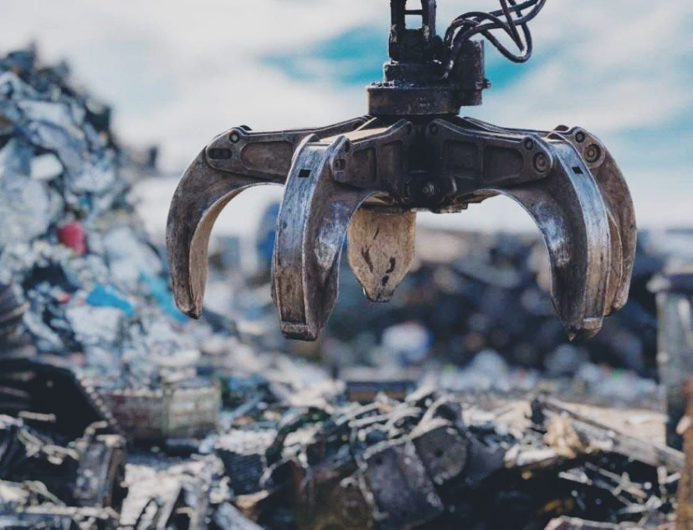
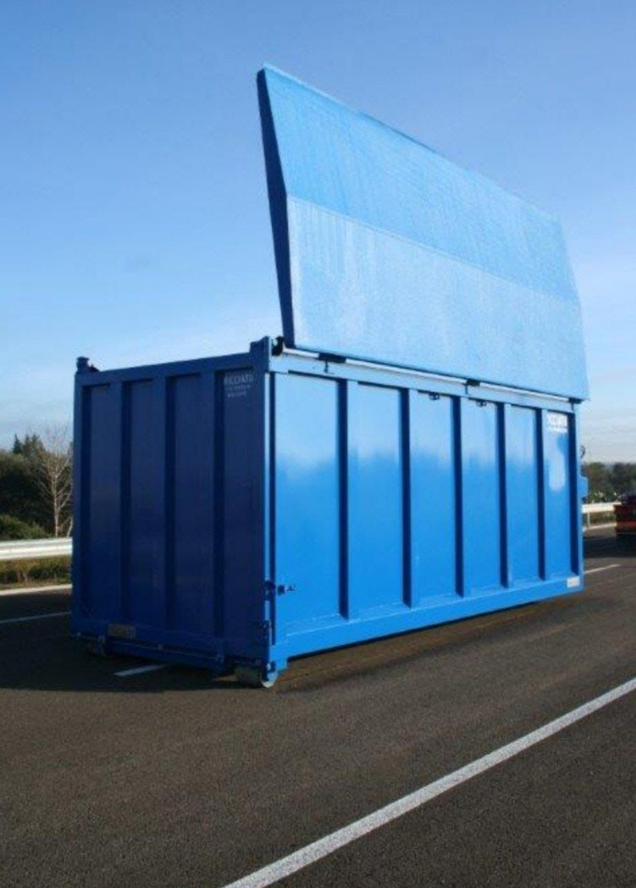

Calendasco PC dal 1959
Dal rifiutoalla risorsa.
Smaltimento rifiuti per privati e aziende dal 1959
01 — L'azienda
Una realtà del territorio.
La Recuperi lavora da Calendasco dal 1959. Servizi per enti, aziende e privati: recupero e smaltimento rifiuti, trasporto rifiuti, servizio gru ragno.
02 — I mezzi
Mezzi propri, personale formato.
mezzi con gru ragno, container, furgoni a noleggio (numero non indicato). Ogni intervento parte dalla nostra sede con attrezzature nostre: niente subappalti da coordinare, un solo referente.
03 — Il metodo
Dalla chiamata al documento.
Conferimento: il materiale arriva in impianto e viene pesato. Controllo: verifica di codici, documenti e qualità del carico. Selezione: separazione per tipologia di materiale.
04 — Le garanzie
Carte in regola.
Albo Gestori Ambientali, Autorizzazione provinciale allo stoccagg. Certificazioni e iscrizioni dichiarate dall'azienda, consultabili su richiesta.
Servizi
Cosa facciamo, uno per uno.
Aprite il servizio che vi interessa: descrizione e foto dal campo.
Selezione dei materiali e avvio a recupero, perché tornino risorse.
Trasporto conto terzi con mezzi autorizzati all'Albo Gestori Ambientali.
Ricezione, selezione e avvio a recupero dei materiali, perché tornino a essere risorse.
Cassoni e container posizionati dove servono e ritirati pieni, con trasporto all'impianto.
Noleggio di mezzi e attrezzature, con o senza operatore.
Gestione dei rifiuti pericolosi con mezzi e imballaggi a norma, dalla classificazione allo smaltimento.
Dove siamo
Da Calendasco, a portata di mezzo.
Distanze dalla sede ai capoluoghi vicini, per capire in quanto tempo un mezzo può essere sul posto.
Certificazioni e iscrizioni
Lavora con noi
Autisti, operatori, tecnici: cerchiamo persone che conoscono il territorio.
Mandateci il vostro curriculum: lo leggiamo tutto, e vi richiamiamo.
Contatti
Scriveteci, vi richiamiamo.
Enti, aziende e privati: indicateci il servizio e la zona, vi rispondiamo con tempi e preventivo.